URL是对可以从因特网上得到的资源的位置和访问方法的⼀种简洁的表示。
URL给资源的位置提供一种抽象的识别方法，并用这种方法来定位。
组成（例： http://host.company.com:80/a/b/c.html?user=Alice&year=2018#p2）
URL相关协议：
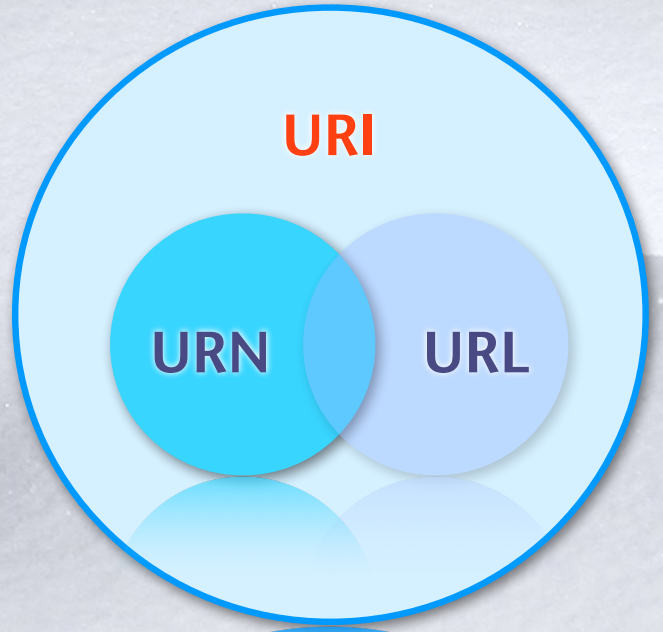
DNS是一个分布式数据库，本地负责控制整个数据库的部分段，客户向DNS服务器请求，得到从域名到IP地址的转化。
DNS的作用：
DNS域名树中的每个节点都可以通过唯⼀的全限定域名(Fully Qualified Domain Name，FQDN)来标识。FQDN给出了在DNS树中的位置。
工作过程：
客户向域名服务器发起查询请求
域名服务器本地查询结果
客户的域名服务器根据根域名服务器解析的地址访问下一级DNS，如此递归逐级查询，直到找到位置。
客户的域名DNS服务器将查询结果返回客户机。
客户根据IP地址访问目标机。
| 阶段 | 描述 |
|---|---|
| HTTP1.0 | 非持续连接，2个RTT时间，使用TCP链接 |
| HTTP1.1 | 支持持久连接，在相同TCP上通讯；支持流水线，可以不等反馈发送很多信息 |
| HTTP2.0 | 支持HTTP1.1，在数据如何封装成帧上有区别，降低了request传输次数，对其多路传输 |
| HTTP3.0 | 和HTTP2完全不同，使用UDP协议，通过重传保证效率 |
“网络爬虫排除标准”（Robots Exclusion Protocol），网站通过Robots协议告诉搜索引擎哪些页面可以抓取，哪些页面不能抓取。
Robots协议是国际互联网界通行的道德规范，基于以下原则建立：
robots是⼀个协议。robots.txt文件是⼀个文本文件，放置在网站根目录下。
是一个Javascript平台的现代Web开发框架总称
HTML用于描述页面的结构
DOCTYPE
Head
<title>是必须的Body
JavaScript用于响应用户操作
基本语法、常用标记
根据结构化的内容选择合适的标签
为何？
新元素
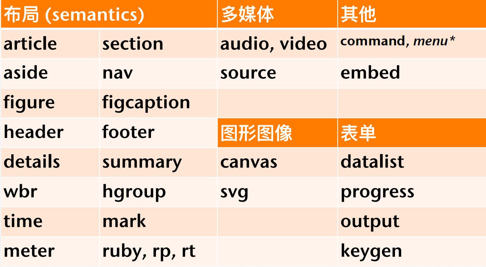
新属性
完全支持 CSS3
Video 和 Audio
2D/3D 制图
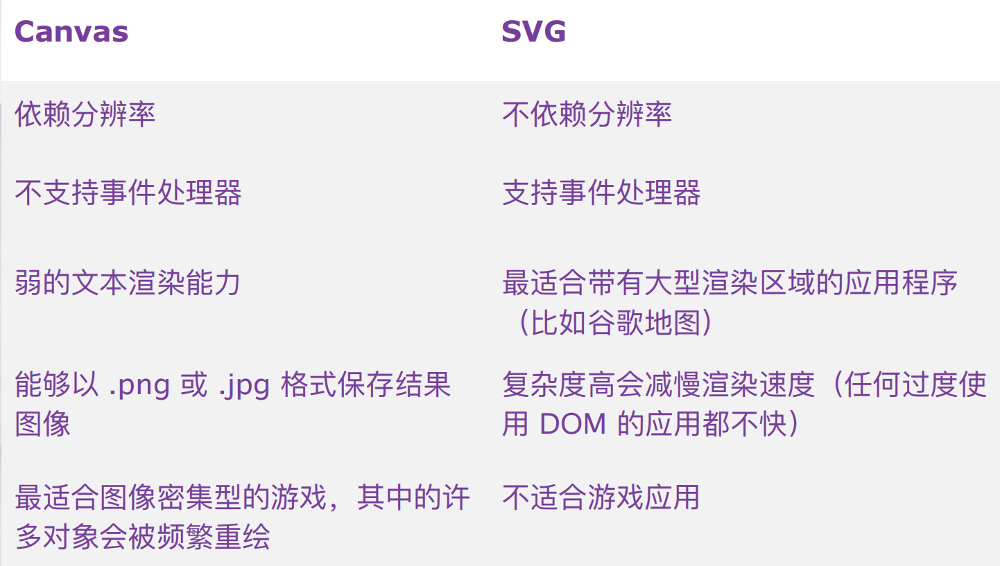
web存储
离线浏览
HTML5 Web SQL 数据库
Web SQL 数据库 API 并不是 HTML5 规范的⼀部分，但是它是⼀个独立的规范，引入了⼀组使用SQL 操作客户端数据库的 APIs。
规范中定义的三个核心方法：
HTML5 Web Workers
HTML5 WebSocket
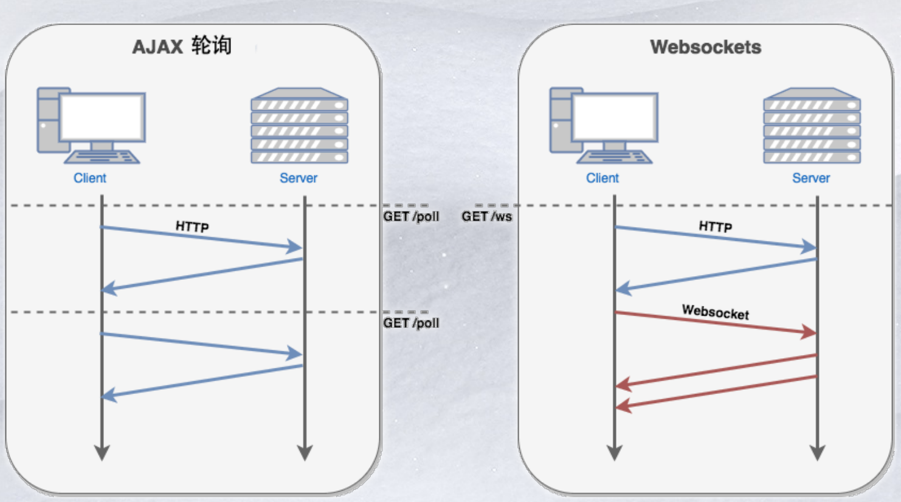
why
CSS 2.1，CSS 3新特性
CSS盒模型
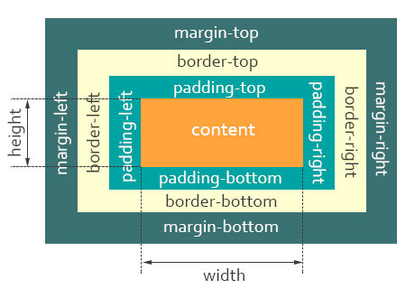
最终元素的总宽度计算公式是这样的：
元素的总高度最终计算公式是这样的：
响应式网页设计，主要手段。
响应式网页设计(RWD，Responsive Web Design)，可以自动识别屏幕宽度、并作出相应调整网页，指页面布局(流式网格)，目标是解决设备多样化问题。
优点：
网站可用性大大提升、简化服务器端、易维护、只提供给搜索引擎一个入口、可支持未知设备。
缺点：
兼容设备导致性能低下、代码冗余(加载时间变长)，限制应用复杂性(折衷的设计方案)、用户混淆(改变了网站布局)
主要手段：
width:20%/auto、px/em优先级顺序和继承关系
相互冲突的声明将按以下顺序应用，后⼀种声明将覆盖前⼀种声明：
CSS选择器的优先级
布局
面包屑导航
作业之主题切换
为什么使用严格模式
ES6的模块自动采用严格模式，不管模块头部有没有use strict；
严格模式有以下限制：
Class
//定义类
class Point {
constructor(x, y){
this.x = x;
this.y = y;
}
// 注意函数构造的⽅式
toString() {
return '(' + this.x + ', ' + this.y + ')';
}
}
var p1 = new Point(5, 5);
p1.toString(); //"(5, 5)"
typeof Point // function
p1.constructor == Point //true
迭代器遍历对象的属性和方法：for item in obj
Prototypes
原型对象为所有对象实例所共享，因此这些实例也共享了原型函数的成员。通过内部属性绑定到原型。
function Book(title, publisher){
this.title = title;
this.publisher = publisher;
}
Book.prototype.sayTitle = function(){
alert(this.title);
};
var book1 = new Book("High Performance JavaScript", "Yahoo! Press");
var book2 = new Book("JavaScript: The Good Parts", "Yahoo! Press");
alert(book1 instanceof Book); //true
alert(book1 instanceof Object); //true
book1.sayTitle(); //"High Performance JavaScript"
alert(book1.toString()); //"[object Object]"
自调用
(function (str){
//此时会输出Hello Jack
console.log("Hello " + str);
})('Jack')
事件的响应函数
//获得按钮元素
var btn=document.getElementById("btn");
//给按钮增加点击事件。
btn.onclick=function(){
alert("当点击按钮时会执行到我哦！");
}
对象
var obj={
name:"Jack",
age:18,
fn:function(){
return "我叫"+this.name+"今年"+this.age+"岁了！";
}
};
函数表达式
//将匿名函数赋值给变量fn。
var fn=function(){
return "我是一只小小小小留下，怎么飞也飞不高！"
}
作用域是当前的执行上下文，值 (en-US)和表达式在其中“可见”或可被访问，即作用域指的是有权访问的变量集合
如果⼀个变量 (en-US)或表达式不在当前的作用域中，那么它是不可用的作用域也可以堆叠成层次结构，子作用域可以访问父作用域，反过来则不行。
JavaScript 的作用域：
作用域链
自由变量：当前的作用域没有定义的变量，找值则需要向父级作用域查找。
自由变量的取值要谨慎:
闭包定义
闭包示例
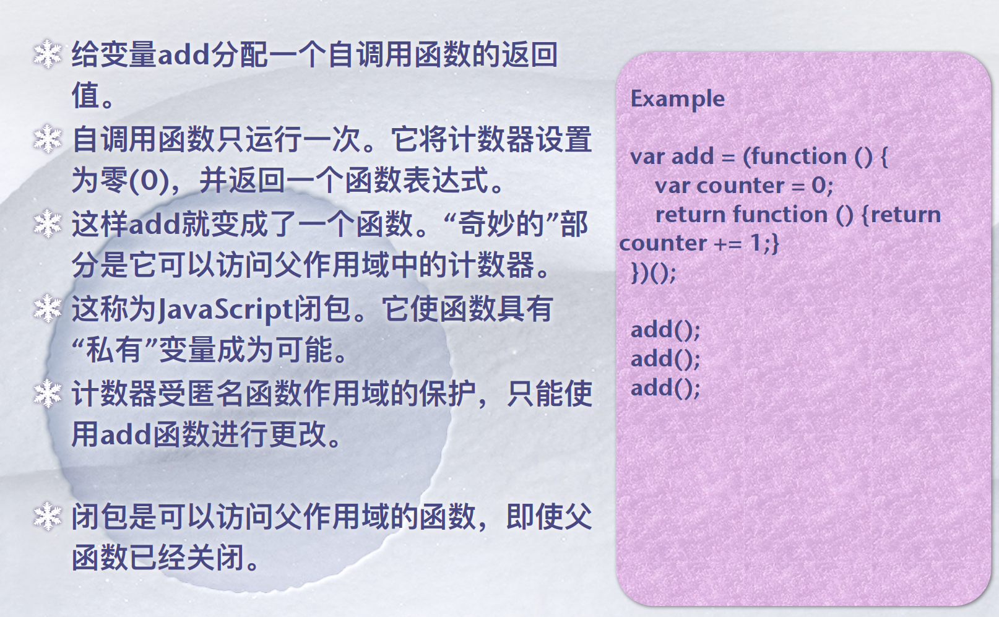
闭包应用场景
HTML：语法要求比较松散，这样对网页编写者来说，比较方便，但对于机器来说，语言的语法越松散，处理起来就越困难，对 于传统的电脑来说，还有能力兼容松散语法，但对于许多其他设备，比如手机，难度就比较大。因此产生了由 DTD 定义规则，语法要求更加严格的XHTML。
XML：最大的变化在于文档必须是良构的，所有标签必须闭合，也就是说开始标签要有相应的结束标签。另外，XHTML中所有的标签必须小写。在XHTML中，所有的参数值，包括数字，必须用双引号括起来。
DOM（文档对象模型，Document Object Model），HTML DOM是HTML的标准对象模型和编程接口。它定义了:
换句话说，HTML DOM是获取、更改、添加或删除HTML元素的标准
DOM0
通过javascript制定事件处理程序的传统方式。就是将一个函数赋值给一个事件处理属性。第四代web浏览器出现，至今为所有浏览器所支持。优点是简单且具有跨浏览器的优势。这个了解下就好，现在也比较少使用这种方式绑定事件,也不支持一些新的事件。
var btn = document.getElementById("btn");
btn.onclick = function(){
alert(this.id);
}
// 取消绑定
btn.onclick = null;
缺点：一个事件只能对应一个处理函数
DOM2
DOM2事件引进了一种全新的绑定事件方法，即事件监听器，添加了一些新的事件。现在的浏览器都支持这种绑定方式，也建议使用这种绑定方式。
var btn = document.getElementById("btn");
var hander = function(){
}
// 参数：事件处理属性名称、处理函数、是否在捕获时执行事件处理函数
addEventListener("click",handler,false/true);
removeEventListener("click",handler,false/true);
DOM2级的事件规定事件流包含三个阶段
addEventListener添加的事件处理程序，只能通过removeEventListener来删除。
事件冒泡，事件开始时由最具体的元素( 文档中嵌套层次最深的那个节点)接受，然后逐级向上传播到较为不具体的节点(文档)。
事件捕获，父节点更早收到事件，而具体的节点最后收到事件。
当一个 DOM 事件触发时，它不是在触发的对象上只触发一次的，而是经历上述的三个阶段，即开始从文档的根节点流向目标对象， 然后在目标对向上被触发，之后再回溯到文档的根节点。
观察者模式是⼀种软件设计模式，在这种模式中，⼀个称为主题的对象维护⼀个名为观察者的依赖项列表，通常通过调用它们的⼀个方法自动通知其任何状态变化
主要用于实现分布式事件处理系统
观察者模式也是我们熟悉的模型-视图-控制器(MVC)体系结构模式中的关键部分。观察者模式在许多编程库和系统中实现，包括几乎所有的GUI工具包。
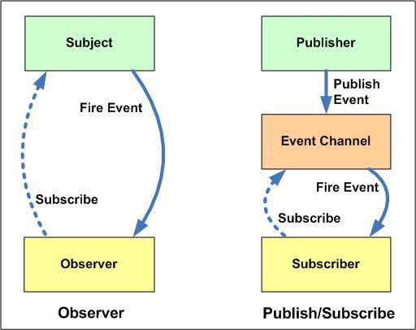
好处：
注意：观察者模式会导致内存泄漏，即所谓的失效侦听器问题。
是一种具有近似于传统桌面应用软件系统功能和特性的网络应用系统。
RIA系统最大的特点是将大部分处理任务都从用户界面端移植到客户端，仅保留一些必要数据与服务器端进行信息交互。
RIA系统的特性：
优点
缺点
实现方式
同步
异步
优点
缺点
XSS威胁
SOP（同源策略，Same Origin Policy）
限制浏览器可以获取的资源，只能从同源网站获取内容(除了资源文件) 同源政策规定，AJAX请求只能发给同源的网址，否则就报错。"同源政策"越来越严格。目前，如果非同源，共有三种行为受到限制。
跨域
当协议、子域名、主域名、端口号中任意一个不同时，都算作不同域
实现跨域的方法
XML
极大的互操作性
严格的格式
容易验证
缺点：非常详细，语法有点模糊，解析不明确
JSON
JSON-P JSON with Padding
事件驱动模型
由⼀个事件收集器、⼀个事件发送器和⼀个事件处理器组成。
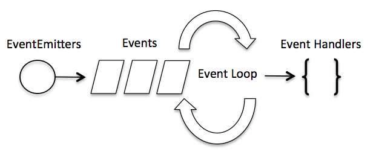
异步I/O
单线程
不惜一切代价避免同步代码，因为阻塞了时间循环，意味着很多的回调。
事件循环
There are a couple of implications of this apparently very simple and basic model. Avoid synchronous code at all costs because it blocks the event loop. Which means: callbacks, callbacks, and more callbacks.
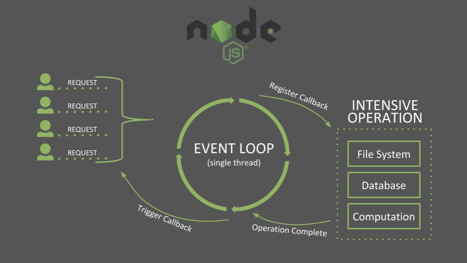
认证(Identification) 是指根据声明者所特有的识别信息，确认声明者的身份。
授权(Authorization)： 在信息安全领域是指资源所有者委派执行者，赋予执行者指定范围的资源操作权限，以便对资源的相关操作。
鉴权(Authentication) 在信息安全领域是指对于⼀个声明者所声明的身份权利，对其所声明的真实性进行鉴别确认的过程。
权限控制(Access/Permission Control) 将可执行的操作定义为权限列表，然后判断操作是否允许/禁止。
利用服务端的Session（会话）和浏览器（客户端）的Cookie来实现的前后端通信认证模式。
HTTP是无状态的协议，所以为了让服务器区分不同的客户端，就必须主动的去维护⼀个状态，这个状态用于告知服务端前后两个请求是否来自同⼀浏览器。而这个状态可以通过 Cookie 去实现。
Session 的抽象概念是会话，是无状态协议通信过程中，为了实现中断/继续操作，将用户和服务器之间的交互进行的⼀种抽象。
优点：
缺点：
Token 是⼀个令牌，客户端访问服务器时，验证通过后服务端会为其签发⼀张令牌，之后，客户端就可以携带令牌访问服务器，服务端只需要验证令牌的有效性即可。
⼀句话概括：访问资源接口（API）时所需要的资源凭证。
Token的组成：uid (用户唯⼀的身份标识) + time (当前时间的时间戳) + sign (签名，Token 的前几位以哈希算法压缩成的⼀定长度的十六进制字符串)。
认证流程图
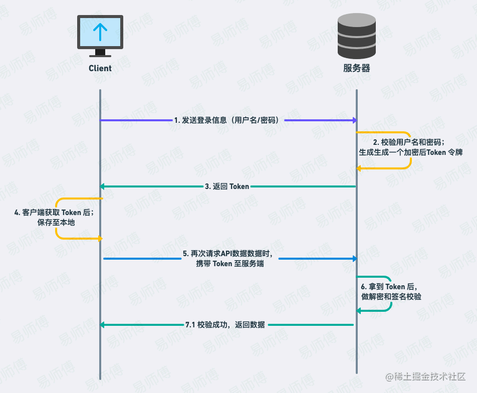
优点：
缺点：
Session-Cookie 和 Token 有很多类似的地方，但是 Token 更像是 Session-Cookie 的升级改良版。
JWT 是 Auth0 提出的通过 对 JSON 进行加密签名来实现授权验证的方案；
就是登录成功后将相关用户信息组成 JSON 对象，然后对这个对象进行某种方式的加密，返回给客户端； 客户端在下次请求时带上这个 Token； 服务端再收到请求时校验 token 合法性，其实也就是在校验请求的合法性。
认证流程
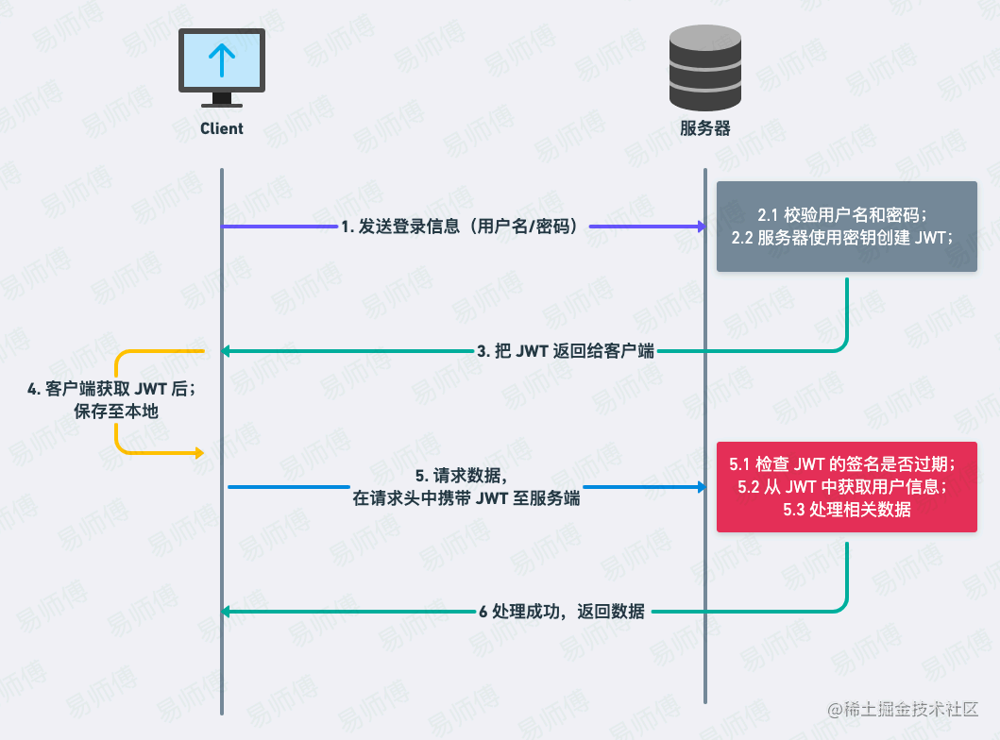
优点：
缺点：
单点登录（Single Sign On）
联合登录
信任登录
唯一登录
扫码登录
一键登录
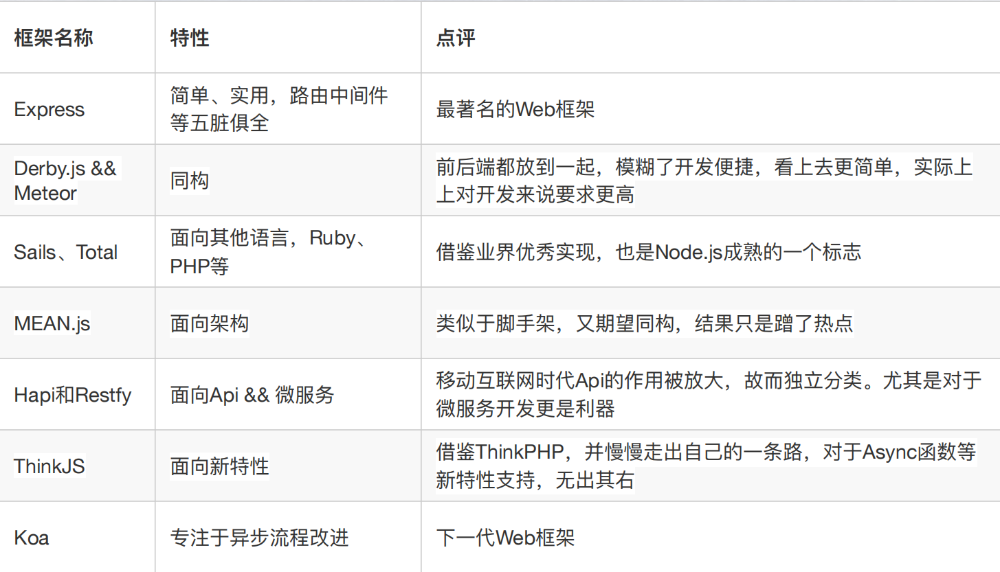
通过设计科学的测试方法、测试工具和测试系统，实现对一类测试对象的某项性能指标进行定量和可对比的测试
延迟(传播、传输、处理、排队)和带宽
Web性能要点
性能监控指标
FP：首次绘制，页面第一次绘制的时间点：只要出现视觉变化，无论什么。
FCP：首次内容绘制，完成对DOM中的一部分内容渲染的时间点：首次绘制来自DOM的内容。
FMP：首次有意义绘制，页面关键元素的渲染时间，由开发者自行定义。
首屏时间：应用渲染完整个屏幕的时间。
用户可交互时间：DOMReady时间
总下载时间：页面所有资源加载完成的时间，一般统计window.onload时间，也可以是异步渲染全部完成的时间。
页面所有元素夹杂时间
第一个字节加载时间
页面渲染时间：瀑布流中两个指标Start Render和msFirstPaint
DOM元素数量
自定义指标
影响基准数据的因素
利用HTTP管道
采用域名分区
打包资源以减少HTTP请求
嵌入小资源
DOM3（文档对象模型，Document Object Mode）
W3C（万维网联盟，World Wide Web Consortium）
ES2015（ECMAScript2015，又称ES6）
URI（统一资源标识符，Uniform Resource Identifier)
BFC（块级格式化上下文，Block Formatting Context）
SOP（同源策略，Same Origin Policy）
Closure（闭包）
CSS Sprites（CSS图像精灵）
Session（会话）
TLS（传输层安全协议，Transport Layer Security）
HTTP常用状态码及其含义？
Javascript中，0.1+0.2==0.3的结果是什么，为什么？如何解决？
影响HTTP事务的TCP相关时延？
对<meta>标签如何理解？
<meta>标签只能出现在<head>里。<meta>标签通常用于给出网页描述、关键词、文档作者、最后修改日期等信息。什么是优雅降级和渐进增强？
什么是"use strict"？为何使用？
什么是HTTP缓存？分类？请描述基本的使用方式。
HTTP 缓存存储与请求关联的响应，并将存储的响应复用于后续请求。
分类
HTTP 缓存主要是通过请求和响应报文头中的对应 Header 信息，来控制缓存的策略。这里主要涉及两个 Header：
Vue、React、Angular、Svelte
优势
选型
解决问题
原理
优点
缺点
数据格式
JSON
JSON-P JSON with Padding
区别可以从以下方面切入
变量提升
var声明的变量存在变量提升，即变量可以在声明之前调用，值为undefined；let 和 const不存在变量提升，即它们所声明的变量一定要在声明后使用，否则报错。暂时性死区
var不存在暂时性死区；let 和 const存在暂时性死区，只有等到声明变量的那一行代码出现，才可以获取和使用该变量。块级作用域
var不存在块级作用域；let 和 const存在块级作用域。重复声明
var允许重复声明；let 和 const在同一作用域下不允许重复声明变量。修改声明的变量
var和let可以；const变量一旦声明，不可再改变。使用
const的情况尽量使用const，其他情况下大多数使用let，避免使用var。变量提升
暂时性死区（英temporal dead zone，简 TDZ），即代码块开始到变量声明语句完成之间的区域。
代码：
var value = 2021;
function fn(){
console.log(value);
var value = {name:"Time"};//变量提升
console.log(value);
}
fn();
console.log(value);
输出：
undefined
{ name: 'Time' }
2021
代码：
{
console.log(bar)
console.log(foo)
var bar = 1;
let foo = 2;
}
输出：
console.log(foo)
^
ReferenceError: Cannot access 'foo' before initialization